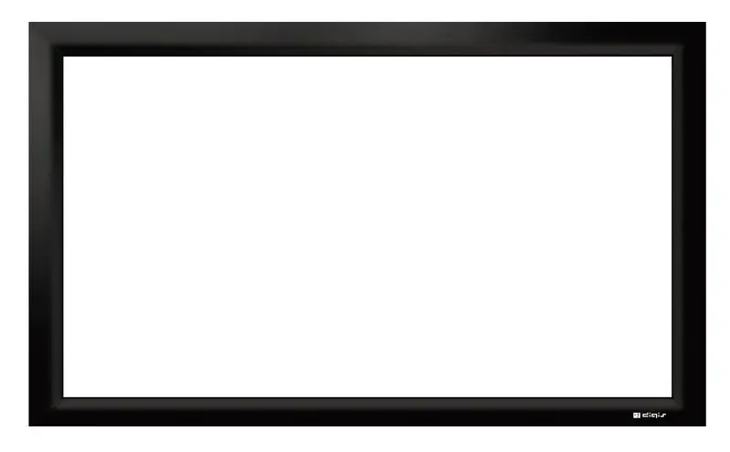

Velvet
Серия Velvet объединяет рамные проекционные экраны с шириной полотна до 4 метров. Полностью бесшовная поверхность из ПВХ обладает идеальной гладкостью для безупречного изображения на экране. Покрытие из стекловолокна обеспечивает точную цветопередачу и устраняет паразитные блики, а бархатная окантовка повышает контрастность и акцентирует внимание на происходящем на экране.